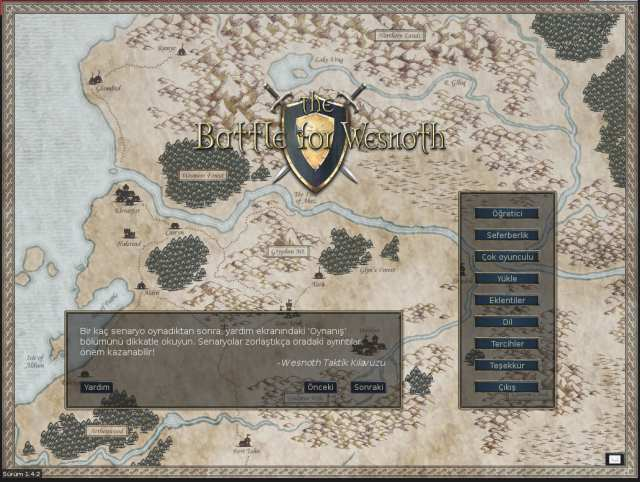
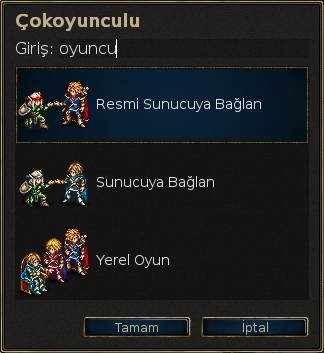
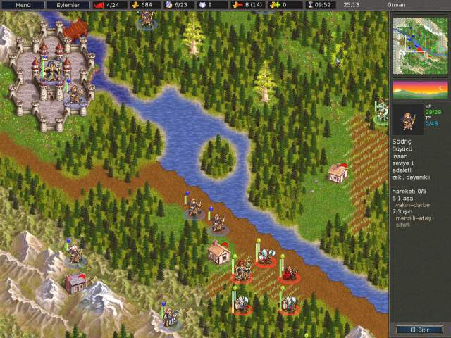
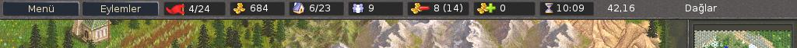
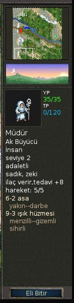
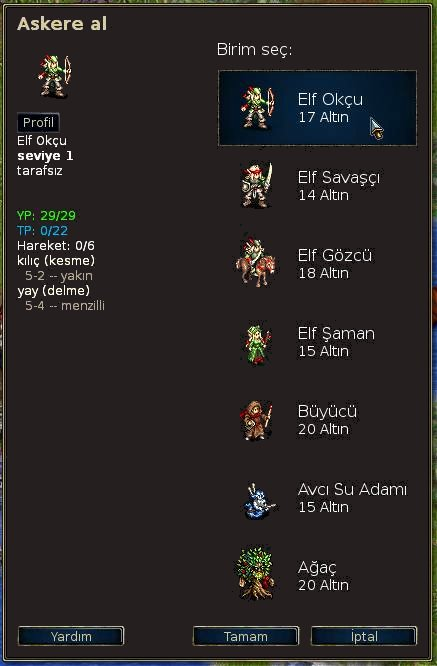

İçindekiler
Tablolar
Wesnoth Savaşı sırayla oynanan fantastik temalı bir strateji oyunudur.
Build up a great army, gradually turning raw recruits into hardened veterans. In later games, recall your toughest warriors and form a deadly host against whom none can stand! Choose units from a large pool of specialists, and hand pick a force with the right strengths to fight well on different terrains against all manner of opposition.
Wesnoth oynanmayı bekleyen bir çok öyküye sahiptir. Wesnoth krallığının hudutlarında haydutlarla, yarı ölülerle ve orklarla, diğer yanda yüksek tepelerde ejderlerle, Eten ormanının yeşillikleri arasında elflerle, Kanalga’nın geniş salonlarında cücelerle veya İnciler Körfezinde su insanları ile döğüşebilirsiniz. Wesnoth tahtını yeniden kazanmak için döğüşebilir veya ölüler diyarına hakim olmak için korkunç gücünüzü kullanabilir ya da topraklarınıza saldırmaya cüret eden insanlara karşı zafer kazanmak için şanlı ork kabilenize liderlik edebilirsiniz.
You will be able to select from among over two hundred unit types (infantry, cavalry, archers, and mages are just the beginning) and fight actions ranging from small-unit ambushes to clashes of vast armies. You can also challenge your friends – or strangers – and fight in epic multi-player fantasy battles.
Battle for Wesnoth is open-source software, and a thriving community of volunteers cooperates to improve the game. You can create your own custom units, write your own scenarios, and even script full-blown campaigns. User-maintained content is available from an add-on server, and the very best of it is incorporated into Battle For Wesnoth's official releases.
İçindekiler
The known portion of the Great Continent, on which Wesnoth abides, is generally divided into three areas: the Northlands, which are generally lawless; the kingdom of Wesnoth and its occasional principality, Elensefar; and the domain of the Southwest Elves in the Aethenwood and beyond.
The Kingdom of Wesnoth lies in the center of this land. Its borders are the Great River to the north, the Dulatus Hills in the east and south, the edge of the Aethenwood to the southwest, and the Ocean to the west. Elensefar, a once-province of Wesnoth, is bordered by the Great River to the north, a loosely defined line with Wesnoth to the east, the Bay of Pearls to the south, and the ocean to the west.
The Northlands is the wild country north of the Great River. Various groups of orcs, dwarves, barbarians and elves populate the region. To the north and east lies the forest of Lintanir, where the great kingdom of the North-Elves keeps to its own mysterious affairs.
Kıtada yer yer rastlanan köyler ordunuz için gelir kaynaklarıdır ve yaralı askerlerin tedavisinde kullanılırlar. Ülkede yer alan dağlardan ve nehirlerden geçer, ormanlar, tepeler ve bataklıklarda gizlenir, çayırlık alanları katedebilirsiniz. Bu arazi türlerinin her birindeki yaşama uyum sağlamış farklı türlerle karşılaşabilir, bazen buralarda kolayca seyahat edebilir, bazen de sizin için normal olan arazilerde rastladığınızda bu türlerle döğüşmek zorunda kalabilirsiniz.
In the world of Wesnoth there dwell humans, elves, dwarves, orcs, drakes, saurians, mermen, nagas, and many other races yet more obscure and wondrous. In accursed lands walk undead and ghosts and specters; monsters lurk in its ruins and dungeons. Each has adapted to particular terrains. Humans inhabit primarily the temperate grasslands. In the hills, mountains and underground caves orcs and dwarves are most at home. In the forests the elves reign supreme. In the oceans and rivers mermen and nagas dominate.
Oyunun amaçları doğrultusunda, ırklar çeşitli hizipler altında gruplanırlar; örneğin, orklar genellikle trollerle, elfler ve cüceler ise insanlarla işbirliği yapar. İnsan toplulukları arasında da hizipleşmeler görülür — kralcılara karşı haydutlar gibi.
Wesnoth ilk çalıştırıldığında sizi karşılayan ekranda sağ tarafta bir dizi düğmeden oluşan ana menüyü göreceksiniz. Bu düğmeler sadece fare ile çalışır. Sabırsızsanız size ilk tavsiyemiz “Language” düğmesine tıklayıp oyun dilini Türkçe yapmanız olacaktır. (Bu çeviri, oyunu Türkçe oynamak isteyenler içindir.) Sonra “Öğretici” düğmesine tıklayıp öğreticiyi çalıştırırsınız. Öğreticide oyunu öğrendiğinize kanaat getirdikten sonra “Seferberlik” düğmesine tıklayıp önünüze gelen listeden “İki Kardeşin Hikayesi” seferberliğini oynayabilirsiniz.

- Öğretici
- Öğretici, oyunu oynamak için gereken temel becerilerden bazılarını öğrenmenizi amaçlayan basit ama gerçek bir oyundur. Burada kazanmanın veya kaybetmenin bir önemi yoktur, asıl amaç öğrenmenizi hızlandırmaktır. Öğreticiyi oynamak için “Öğretici” düğmesine tıklayınız. Öğreticide prens Konrad veya prenses Lisar rollerinden birini seçeceksiniz. Öğretmeniniz ise yaşlı büyücü Delfador olacak. Anlattıklarını dikkatle dinleyin ve uygulamaya çalışın.
- Seferberlik
- Wesnoth’un birincil tasarım amacı seferberlikleri oynatmaktır. Seferberlikler birbirlerine bağlı senaryolardan oluşur. Yeni bir seferberlik başlatmak için bu düğmeye tıkladıktan sonra karşınıza bilgisayarınızda kurulu seferberliklerin listesi gelir (isterseniz başka seferberlikleri indirip kurabilirsiniz). Oynamak istediğiniz seferberliği seçip “Tamam” düğmesine veya seçim yapmadan çıkmak için “İptal” düğmesine tıklayabilirsiniz. Her seferberliğin açıklamasında belirtilen bir zorluk düzeyi (acemi düzeyi, orta düzey ve uzman düzeyi gibi) ve kendi içinde de ayrıca zorluk seviyeleri vardır (kolay, normal, zor gibi). Seferberlik içi zorluk seviyelerinden zor olanı değil normal olanı seçmenizi öneririz. Sefer sırasında zorluk derecesini değiştiremezsiniz. Acemi düzeyindeki bir seferberlikte döğüşürken sorunlarla karşılaşırsanız Temel Strateji bölümünde size yardımcı olacak bir şeyler bulabilirsiniz. Seferberliğin zorluk seviyesine karar verdikten sonra oyun seferberliğin ilk senaryosu ile başlar.
- Çok oyunculu
- Bu düğmeye tıklamak suretiyle bir veya daha fazla rakibe karşı tek bir senaryo oynayabilirsiniz. Çok oyunculu oyunları internette veya kendi bilgisayarınızda insan rakiplere veya bilgisayar rakibe karşı oynayabilirsiniz. Oyunu nerede oynayacağınıza karar verdikten sonra tıkladığınız düğme ile karşınıza seçeceğiniz senaryoyu nasıl oynamak istediğinizi belirtebileceğiniz seçenekler sunan bir pencere gelecektir. Daha ayrıntılı bilgi için Senaryolar bölümüne bakınız.
- Yükle
- Evvelce kaydedilmiş bir oyunu yüklemek isterseniz bu düğmeye tıklayın. Karşınıza gelen kayıtlı oyunlar listesinden yükleyeceğiniz oyunu seçip Tamam düğmesine veya oyun yüklemeden çıkmak için İptal düğmesine tıklayabilirsiniz. Yeniden oynanacak oyunu seçtikten sonra ‘Tekrar göster’ kutucuğunu işaretlerseniz yüklenen oyunun bütün hareketleri baştan itibaren gösterilir.
- Eklentiler
- Bu düğmeye tıkladığınızda kullanıcılar tarafından oluşturulmuş içeriğin sunulduğu içerik sunucusuna bağlanırsınız. Bu içerik arasında seferberlikler, çok oyunculu senaryo çağları (her çağın kendine özgü hizipleri vardır) ve çok oyunculu haritaları bulabilirsiniz. “Eklentileri sil” düğmesiyle artık istemediğiniz eklentileri sisteminizden silebilirsiniz.
- Dil
- İstediğiniz dili seçmek için bu düğmeye tıkladıktan sonra listeden dili seçip Tamam düğmesine tıklamak suretiyle dili değiştirebilir veya İptal düğmesiyle mevcut dili kullanmaya devam edebilirsiniz. Wesnoth ilk başlatıldığında sisteminizin öntanımlı dili saptanabilmişse o dil, aksi takdirde İngilizce kullanılır. Wesnoth düğmelerindeki yazılar İngilizce olmuşsa dili Türkçe yapmak için “Language” düğmesine tıklayıp listeden ‘Türkçe’’yi seçeceksiniz.
- Tercihler
- Öntanımlı ayarları değiştirmek için bu düğmeye tıklayın.
- Teşekkür
- Wesnoth’un ana katkıcılarının listesini görmek isterseniz bu düğmeye tıklayınız. Listedekileri çoğunlukla irc.freenode.org:6667 adresindeki #wesnoth kanalında bulabilirsiniz.
- Çıkış
- Wesnoth’u kapatmak için bu düğmeye tıklayacaksınız.
- Yardım
- Bu düğmeye tıkladığınızda oyuna dahil edilmiş Yardım Sistemi açılır. Burada birimler ve oyunun oynanışı hakkında bilgiler bulabilirsiniz. Yardım sisteminde bulacağınız şeylerin çoğuna bu kılavuzda yer verilmiştir.
- Sonraki
- Bu düğmelere tıklamak suretiyle “Wesnoth Kitabı” içindeki ipuçları arasında dolaşabilirsiniz.
- Önceki
- Bu düğmelere tıklamak suretiyle “Wesnoth Kitabı” içindeki ipuçları arasında dolaşabilirsiniz.
- Zarf Simgesi
- Click this button (the icon of an envelope) to open a dialog where you can enable or disable summary uploads which will help us to better balance campaigns. All data submitted will be anonymous.
Wesnoth Savaşında oyun oynamak için temelde iki yöntem vardır:
- Bilgisayara karşı, birbirlerine bağlı senaryolardan oluşan seferberlikleri oynamak.
- Bilgisayar veya insan rakiplere karşı tek bir senaryo oynamak.
Seferberlikler bir araya geldiğinde bir hikaye bütünlüğü oluşturan döğüş senaryolarından oluşur. Genellikle seferberliklerde 10 ila 20 arasında değişen sayıda senaryo vardır. Seferberliklerin çok oyunculu senaryolardan farkı tecrübeli bir ordu geliştirme imkanı vermesidir. Her senaryonun bitiminde sağ kalan birimler sonraki senaryolarda kullanılmak üzere kaydedilirler. Eğer sonraki senaryoda kullanmadığınız birimler olursa bunları kaybetmiş olmazsınız, onları daha sonraki senaryolarda kullanabilirsiniz.
Seferberlikler Wesnoth’un başat oynama biçimi olarak düşünülmüştür. Yeni oyuncuların oyunu öğrenmesi için önerilen en eğlenceli yol seferberliklerin oynanmasıdır.
Tek bir senaryonun tamamlanması yaklaşık yarım saat ile 2 saat arasında değişir. Bu en hızlı oyun oynama şeklidir fakat senaryo bitiminde birimler kaydedilmez ve seferberlik birimlerini kullanamazsınız. Senaryoları internete bağlı olarak veya bağlı olmaksızın doğrudan kendi makinenizde bilgisayara veya başkalarına karşı oynayabilirsiniz. Senaryolara ana menüden “Çok oyunculu” düğmesine tıklayıp erişebilirsiniz.
Genelde çok oyunculu oyunlar internet üzerinden diğer oyunculara karşı oynanır (bir yerel ağınız varsa, orada da oynayabilirsiniz). Bu oyunların hepsi Wesnoth çok oyunculu oyun sunucusundan sunulur. Çok oyunculu oyunlar katılan oyuncu sayısına ve haritanın büyüklüğüne bağlı olarak 1 ila 10 saat arasında sürer. Ortalama süre 3-7 saat arasıdır. Oyunları defalarca kaydedip yükleyerek oynayabilirsiniz. Böylelikle her gün bir kaç saat oynamak suretiyle bir senaryoyu 1-2 haftaya yaymak mümkün olur. Çok oyunculu senaryolarda birimleri senaryolar arasında taşıyamazsınız. Bu bakımdan ordunuzun kazandığı güç o senaryo ile sınırlı kalır.
“Çok oyunculu” düğmesine tıkladıktan sonra açılan menüde şu seçenekler bulunmaktadır:

Bu seçenek sizi doğrudan resmi sunucuya bağlar. İsterseniz kendi oyununuzu kurabilmeniz, isterseniz yeni oyuncular bekleyen oyunlara katılabilmeniz için salona alınırsınız.
Bu seçenek bağlanmak istediğiniz sunucunun adresini girebileceğiniz bir pencere açar. Bu pencerede ayrıca “Listeyi Göster” diye bir düğme vardır. Bu düğmeyle açılan pencerede ana sunucu o an devrede değilse yedek olarak kullanılabilecek resmi sunucular listelenir.
Resmi ve kullanıcıların oluşturduğu sunucuların tam listesini Çok oyunculu sunucuları listesinde bulabilirsiniz.
Bir harici çok oyunculu oyun sunucusu kullanmaksızın bir çok oyunculu oyun başlatmak isterseniz wesnothd sunucu programını çalıştırmak suretiyle kendi sunucunuzu oluşturabilirsiniz. Kendi makinenizdeki sunucuya bağlanmak için “Sunucuya Bağlan” seçeneği ile açılan pencerede adres olarak 127.0.0.1 yazmalısınız. Oyunu sizin makinenize bağlanarak oynamak isteyen oyuncular TCP kullanarak 15000 portundan sizin sunucunuza bağlanacakları için eğer güvenlik duvarı kullanıyorsanız, ayarlarınızda 15000 portuna TCP erişimine izin vermelisiniz. Bir yönlendiricinin arkasındaysanız, ağ yöneticinize 15000 portuna gelen istekleri sizin makinenize yönlendirmesini söyleyiniz. Oyun oynamak için başka bir sunucuya bağlanmak isterseniz güvenlik duvarı ve/veya yönlendirici ayarlarında bir değişiklik yapmanıza gerek yoktur.
Bu düğmeyle hiçbir sunucuya bağlanmazsınız, oyun sadece kendi makinenizde çalışır. Böyle bir oyunu oyuncular yer değiştirerek aynı makinede oynarlar. Bu tür bir oyunda geçireceğiniz zamanla internette oynadığınızda geçireceğiniz zaman arasında çok büyük bir fark yoktur. İsterseniz oyunu sadece bilgisayara karşı da oynayabilirsiniz. Gerçek oyunculara karşı oynamadan önce çeşitli haritalar hakkında bilgi sahibi olmak isterseniz bu yöntemi kullanabilirsiniz. Ayrıca hangi hizipi kullanacağınıza karar vermek için çeşitli hizipleri denemek amacıyla da bu yolu kullanabilirsiniz. Şüphesiz bir oyunu arkadaşınızla birlikte bilgisayara karşı oynamanız ayrıca mümkündür.

İster bir seferberlik ister çok oyunculu bir senaryoyu oynuyor olun, aynı temel ekran yerleşimini kullanırsınız. Ekranın büyük bir kısmını oyunda yer alan hareketlerin gösterildiği bir harita doldurur. Haritanın çevresine oyun hakkında yararlı bilgiler sağlayan bileşenler bulunur. Bu bileşenler aşağıda ayrıntılı olarak açıklanmıştır.

Ekranın tepesinde yer alan çubukta soldan sağa doğru şu öğeler yer alır:
- Menü düğmesi
- Eylemler düğmesi
- El sayacı (o anki el/azami el sayısı)
- Altınınız
- Köyler (sizinkiler/toplam köy sayısı)
- Birim sayınız
- Gideriniz
- Geliriniz
- Günün saati veya kalan süre (çok oyunculu oyunlar için)
- O anki altıgenin konumu (x-koordinatı, y-koordinatı)
- Geçerli arazi türü

Ekranın sağındaki panelde yukarıdan aşağıya doğru:
- Ölçekli olarak haritanın tamamı
- Günün vakti göstericisi
- Seçili birimin birim tanımı
- Eli bitir düğmesi
Bir senaryo veya seferberliğe ilk başladığınızda harita üzerinde bir kaç birim olacaktır. Bunlardan biri sizin komutanınız olacaktır (altından bir taç simgesiyle belirtilir). Komutanınız genellikle burç adı verilen özel bir kale bölümünde yer alır. Komutanınız bir kale burcunda olduğu zaman (bu kalenin sizin kaleniz olması şart değildir) ve yeterince altınız da varsa ne zaman isterseniz ordunuz için asker alabilirsiniz. Daha sonraki senaryolarda önceki senaryolarda sağ kalmış birimleri de yeni asker almadaki gibi geri çağırabilirsiniz. Böyle, senaryodan senaryoya geçerek düşmanı yenecek güçte bir ordu kurabilirsiniz.
The first thing you will probably want to do is recruit your first
unit. Press Ctrl-R (or right click on an empty castle hex
and select "Recruit") and you will be able to recruit a unit from a list of
all the units available to you. Each recruit is placed on an empty castle
hex. Once you have filled the castle, you cannot recruit any more until
units move off. Your opponent's commander is similarly placed on its castle
keep and will begin by recruiting its troops — so don't dilly-dally
looking at the scenery, there's a battle to be won.
Her başarılı biten senaryonun sonunda sağ kalan askerlerinizi program kaydeder. Sonraki senaryonun başlangıcında bu eski askerleri askere almaya benzer bir şekilde geri çağırabilirsiniz. Eski askerler yeni askere alınacaklardan daha tecrübeli olacakları için eskilerden tecrübe kazanmışları geri çağırmak daha iyidir.
Bütün oyun türleri birim adı verilen askerleri kullanırlar. Her birim Irk, Seviye ve Sınıfı ile tanımlanır. Her birimin kendine özgü güçlü ve zayıf yanları vardır. Bunlar birimin üzerinde bulunduğu araziye ve seviyesine bağlı olarak değişen dirençleriyle belirlenir. Bu konu oyun içi yardımda daha ayrıntılı anlatılmıştır.
Askerleriniz savaşta deneyim kazandıkça yeni beceriler edinecek ve daha güçlü hale gelecektir. Bir kısmı savaşta ölecek ve bu olduğunda daha fazla asker alacak veya çağıracaksınız. Fakat birimlerinizi akıllıca seçin, her birinin rakiplerine karşı güçlü yönleri olduğu gibi zayıf yönleri de vardır.
Her senaryonun başlangıcında “Senaryo Amaçları” penceresinde yazanları dikkatle okuyun. Genellikle zafere ulaşmak için düşman liderini öldürmeniz istenir ve yenilgi de genellikle komutanınızın ölümü halinde gerçekleşir. Fakat senaryoların amaçları her zaman bunlarla sınırlı olmayabilir; liderinizi haritanın belli bir noktasına götürmeniz, bir bulmacayı çözmeniz veya bir kuşatmaya belli bir el sayısı dayanmanız istenebilir.
Senaryoyu başarıyla tamamladığınızda harita karanlıklaşır ve Eli Bitir düğmesi Senaryoyu Bitir düğmesine dönüşür. Artık düğmeye basmadan önce kayıt seçeneklerini değiştirmek veya (çok oyunculu bir oyundaysanız) müttefiklerinizle sohbet etmek gibi şeyler yapabilirsiniz.
Ordunuz karın tokluğuna savaşmaz. Birimleri askere alırken onlara bir ödeme yapılır. Her senaryoya önceki senaryolardan artan altınla başlarsınız (aslında her senaryo belli bir miktar altınla başlamayı gerektirir ve o kadar altınınız artmamışsa gereken asgari tutar senaryonun başlangıcında size verilir). Genellikle senaryo amaçlarını ne kadar çabuk gerçekleştirirseniz o kadar daha fazla altınınız olur (erken bitirme ödülü alırsınız). Ayrıca sahip olduğunuz köy sayısı da geliriniz üzerinde etkili olacaktır. Sahip olduğunuz her köy için her elin başında 2 altınlık bir gelir elde edersiniz. Senaryoya başladığınız anda yapacağınız ilk iş etraftaki köylere bayrağınızı dikmek olmalıdır. Senaryo başlangıcında ne kadar çok köy ele geçirirseniz geliriniz o kadar fazla olur. Mevcut altınınızı, gelir ve giderinizi oyun ekranı bölümünde açıklandığı gibi ekranın üst tarafında görebilirsiniz.
Her senaryonun başında oyununuz normalde kaydedilir. Eğer yenilirseniz, senaryoyu tekrar yükleyip yenilmemeye çalışabilirsiniz. Eğer senaryo bitmeden oyundan çıkmanız gerekirse bulunduğunuz eli kaydedip daha sonra bunu geri yükleyip kaldığınız yerden devam edebilirsiniz. Ancak şunu unutmayın ki, iyi bir Wesnoth Savaşı oyuncusu asla senaryo bitmeden oyunu kaydetmek ihtiyacını duymaz. Ancak, yeni başlayanlar bu işleme sık sık başvururlar.
Aşağıda öntanımlı denetim tuşları listelenmiştir. İsterseniz bunları Tercihler menüsünden değiştirebilirsiniz.
Tablo 2.1. Denetimler ve Kısayol Tuşları
| F1 | Wesnoth Savaşı Yardımı |
| Ok tuşları | Kaydırma |
| Sol tık | Birimi seçer ve hareket ettirir. |
| Sağ tık | Ana menü, eylemi iptal eder. |
| Orta tık | İmlecin bulunduğu altıgeni ekrana ortalar. |
| Esc tuşu | Oyundan çıkar, menüden çıkar, iletiyi iptal eder. |
| Ctrl-r | Bir birimi askere almak için |
| Ctrl-alt-r | Son birimden bir tane daha askere almak için |
| Alt-r | Eski askerleri çağırmak için |
| u | Son hareketi geri almak için (sadece bir yaptırımla sonuçlanmamış hareketler geri alınabilir) |
| r | Geri alınan hareketi ileri alır |
| m | Bir oyuncuya ileti göndermek için (çok oyunculuda) |
| ctrl-m | Müttefiklerinize ileti göndermek için (çok oyunculuda) |
| Alt-m | Oyundaki herkese ileti göndermek için (çok oyunculuda) |
| Alt-c | Sohbet günlüğünü gösterir |
| n | Hareketi bitmemiş birimleri taramak için |
| N | Hareketi bitmemiş birimleri ters yönde taramak için |
| Boşluk tuşu | Hareketi bitmemiş birimlerin kalan hareketlerini sıfırlayıp sonraki birime geçmek için |
| Shift-Boşluk | Seçili birimi yerinde tutmak için (hareketini sıfırlar) |
| Ctrl-Boşluk | Oyuncunun elini bitirir |
| Ctrl-v | Olası düşman hareketlerini göstermek için (düşmanın sonraki el gideceği yerler) |
| Ctrl-b | Olası düşman hareketlerini göstermek için (birimleriniz harita üzerinde yokmuşçasına) |
| Ctrl-j | Senaryo amaçlarını gösterir |
| Ctrl-f | Tam ekran ile Pencereli kip arasında geçiş yapar |
| Ctrl-a | Hızlandırılmış oyun kipini açıp kapar |
| Ctrl-g | Izgarayı açıp kapar |
| Ctrl-c | Ekrandaki yaftaları siler |
| Ctrl-s | Oyunu kaydeder |
| Ctrl-o | Oyun yükler |
| Ctrl-p | Tercihler menüsünü açar |
| Ctrl-q | Oyundan çıkar |
| / | Ara (adına göre birimi veya yaftayı bul) |
| t | Hareketi kesintiye uğratılan birimi hareketine devam ettirmek için |
| + | Görüntüyü büyütür |
| - | Görüntüyü küçültür |
| 0 | Görüntüyü öntanımlı duruma getirir |
| Ctrl-n | Birimi isimlendirmek için |
| 1-7 | Seçili birimin kaç elde nerelere kadar gidebileceğini gösterir |
| l | Lider ekranda görünecek şekilde haritayı kaydırır |
| d | Seçili birimin tanımını getirir |
| Ctrl-g | Izgarayı açıp kapar |
| S | Örtüyü hemen günceller |
| D | Örtü güncellemeyi geciktirir |
| Alt-l | Bir altıgene bir yafta eklemek için |
| Ctrl-l | Takım etiketini ayarlar |
| Alt-s | Durum tablosunu gösterir |
| s | İstatistikleri gösterir |
| Alt-u | Birim listesini gösterir |
| Ctrl-alt-m | Oyun seslerini açıp kapar |
| : | Komut Kipi |
Tarafların her birine başlangıçta bir belli miktar ve her elin başında da 2 altın verilir. Ayrıca her el sahip olduğunuz köy başına 1 altın gelir elde edersiniz. Bir seferberlikte bir senaryonun asgari başlangıç altını önceki senaryoda elde kalan altının %80'inden yüksekse oyuncu bu asgari altınla başlar, aksi takdirde önceki senaryodan devredilen miktarla başlar. Her senaryo için asgari başlangıç altını seferberlik başlangıcında seçtiğiniz zorluk seviyesini göre değişiklik gösterir. Zorluk seviyesi arttıkça bu miktar küçülür.

Altının ana kullanım amacı ordunuza yeni birimler almak veya önceki senaryolarda sağ kalmış birimleri ordunuza geri çağırmaktır. Bir birimin askere alınabilmesi veya geri çağırılabilmesi için liderin kale burcunda bulunması ve en az bir tane boş kale altıgeni olması gerekir.
- Boş kale altıgenlerinden birine sağ tıkladıktan sonra açılan menüden ‘Asker al’ seçeneğine tıklayıp açılan listeden yeni birimleri askere alabilirsiniz. Askere alma bedeli birimden birime değişiklik gösterse de genellikle 10 ila 20 altın arasındadır.
- Boş kale altıgenlerinden birine sağ tıkladıktan sonra açılan menüden ‘Çağır’ seçeneğine tıklayıp açılan listeden tecrübeli birimleri askere çağırabilirsiniz. Geri çağırma bedeli sabit olup, birim başına 20 altındır. Daha ayrıntılı bilgi için Eski askerlerin çağrılması bölümüne bakınız.
Her birimin ayrıca bir bakım gideri vardır. Bakım gideri genellikle birimin seviyesine denktir, ancak birim “sadık” mizaçlıysa (aşağıya bakınız) bir gidere yol açmaz. Başlangıçta askere alınmamış veya geri çağrılmamış birimler - yani lider ve ekibe gönüllü katılanlar - normal olarak sadık mizaçlı olurlar. Bakım ödemesi sadece tarafın elindeki köy sayısı tarafın birimlerinin toplam bakım bedelinden büyükse yapılır. Bakım ödemesi köy sayısı ile bakım bedeli arasındaki farktır.
Her el elde edilecek gelir, sadık olmayan birimlerinizin seviyelerinin toplamının bakım giderine eşit olduğu durumda, şu formülle hesaplanır:
2 + villages - maximum(0, upkeep - villages)
Türkçesi:
2 + köy_sayısı - azami(0, gider - köy_sayısı)
Eğer bakım giderinin 2 eksiği köy sayısından büyükse taraf altın kaybetmeye başlar. Eşitse ne gelir ne de gider söz konusu olur.
Wesnoth Savaşı’nda her biri farklı özelliklere sahip yüzlerce birim vardır. Her birimin kendini diğerlerinden farklı kılan kendine özgü karakter özellikleri vardır. Ayrıca seferberlik tasarımcıları oyuncuların seçeneklerini arttırmak için kendi tasarladıkları birimleri de oyuna katarlar.
Bir birimin yaşam puanı (YP), hareket puanı (HP), kullanabildiği silahlar ve bu silahların vereceği hasarlar birimin tanımlayıcı özelliklerinden bazılarıdır. Birimlerin bunlardan başka aşağıda ayrıntılı olarak açıklanacak olan özel yetenekleri olabilir ve günün vaktine göre farklı mizaç özellikleri gösterebilirler.
Her birimin ait olduğu bir vardiya vardır: adaletli, tarafsız veya kaotik. Vardiyalar birimin günün hangi saatinden ne kadar etkileneceğinin bir göstergesidir. Adaletli birimler gündüz daha fazla hasar verirken gece o kadar hasar veremezler. Kaotik birimler ise tersine gece daha çok hasar verirler. Tarafsız birimler ise günün saatinden etkilenmezler.
Gündüz ve gece güneşin ve ayın konumuna bağlı olarak iki dönemden oluşur: Sabah ve İkindi ile Gece ve Sabaha Karşı.
Aşağıdaki tabloda günün farklı vakitlerinin adaletli ve kaotik birimlerin hasar durumlarına etkisi gösterilmiştir:
Tablo 2.2. Günün vakti ve hasar
| Evre | Resim | Gün vakitleri | Adaletli | Kaotik |
|---|---|---|---|---|
| 1 |

| Şafak | — | — |
| 2 |

| Gündüz (sabah) | +%25 | -%25 |
| 3 |

| Gündüz (ikindi) | +%25 | -%25 |
| 4 |

| Akşam | — | — |
| 5 |

| Gece (gece) | -%25 | +%25 |
| 6 |

| Gece (sabaha karşı) | -%25 | +%25 |
| Özel |

| Yeraltı | -%25 | +%25 |
Aklınızda olsun, bazı senaryolar yeraltında geçer ve buralarda gece hiç bitmez!
Örnek: Her ikisi de aynı temel hasar puanına sahip biri Adaletli diğeri
Kaotik iki birim döğüşüyor olsun. Şafak ve Akşam vakti her ikisi de isabet
ettirdikleri her vuruş için 12 puanlık hasar verirler. Sabah ve İkindi vakti
isabet ettirilen her vuruş için Adaletli birim 15 (12 *
1.25) puanlık hasar verirken Kaotik birim 9 (12 *
0.75) puanlık hasar verecektir. Gece ve Sabaha karşı ise Adaletli
birim 9, Kaotik birim 15 hasar verecektir.
Bunlara eşdeğer bir Tarafsız birim ise isabet ettirdiği taktirde günün vaktinden bağımsız olarak daima 12 puanlık hasara yol açacaktır.
Her birimin kendine has bazı karakteristik özellikleri vardır. Bu karakterler, birimler oluşturulurken rasgele atanırlar. Çoğu birim iki karakter özelliği birden alır.
Çoğu birim için olası karakter özellikleri:
- Zeki
- Zeki birimlerin seviye atlaması normalden %20 daha az tecrübe gerektirir (trollere bu özellik verilmez). Zeki birimler bir seferberliğin başında çok faydalıdırlar, çünkü üst seviyelere daha çabuk ulaşırlar. Seferberliğin ileri senaryolarında zeki birimler artık çok faydalı olmazlar çünkü en üst seviyeye ulaştıktan sonraki tecrübe puanları birimler için pek bir işe yaramaz. Eğer çok sayıda ‘en üst seviye’ birimine sahipseniz, işinize en çok yarayacak mizaca sahip olanları çağırmayı düşünebilirsiniz.
- Hızlı
- Hızlı birimlerin normalden 1 fazla hareket puanına karşın %5 daha az yaşam puanı olur. Hızlılık en çabuk farkedilen yetenektir, özellikle troller ve ağır piyade gibi yavaş birimlerde. Hızlı mizaçlı birimler genellikle zor bölgelerde arttırılmış hareket yeteneğine sahiptir bu yüzden birimlerinizi yayarken bunu dikkate almalısınız. Hızlı birimler bu yeteneğe sahip olmayan birimler kadar sağlam değillerdir ve bu yüzden karşı savunma durumlarında iyi değillerdir.
- Dayanıklı
- Dayanıklı birimlerin normalden 4 fazla yaşam puanına ek olarak her seviye için 1 fazla yaşam puanları vardır. Dayanıklı birimler bir seferberliğin her bölümünde faydalıdırlar ve bu bütün birimler için en faydalı yetenektir. Dayanıklı mizaç az yaşam puanı, iyi savunma ve yüksek dirence sahip bir birim için çok faydalıdır. Dayanıklı birimler stratejik noktaları tutmak için idealdirler.
- Güçlü
- Güçlü birimler yakın döğüşte vuruş başına 1 fazla hasar verirler ve kendilerinin 1 fazla YP’leri vardır. Herhangi bir yakın döğüş birimi için kullanışlı olmasına karşın güçlülük elf savaşçısı gibi fazla sayıda vuruş yapan birimlerde daha etkilidir. Güçlü birimler bir birimi öldürmek için verilebilecek olandan biraz fazla hasar gerektiği zaman çok faydalıdırlar.
Ayrıca belli birimlere veya sadece belli bir ırkın birimlerine atanabilen bazı karakter özellikleri vardır. Bunlar:
- Becerikli
- Becerikli birimler menzilli döğüşte her isabetli atışta 1 fazla hasar verirler. Becerikli mizacı sadece elflere aittir. Elf bireyleri esrarengiz zerafetleri ve okçuluktaki yetenekleri ile bilinir. İçlerinden bazıları diğerlerini çok aşan doğal bir yeteneğe sahiptir. Bu elfler her bir ok ile ek bir hasara sebebiyet verirler.
- Sağlıklı
- Renowned for their vitality, some dwarves are sturdier than others and can rest even when traveling. Healthy units have 1 HP plus 1 HP per level more than usual and rest heal the usual 2 HP after each turn they did not fight. They also suffer a quarter less damage from poison.
- Korkusuz
- Does not suffer from a negative attack bonus during its unfavorable time of day (Heavy Infantry, Necrophage, Trolls, Walking Corpses).
Bunlardan başka bir de rasgele atanmayan bazı karakter özellikleri vardır. Bu özellikler ya senaryo başlangıcında senaryo tasarımcısı tarafından atanır ya da belli birimlere zaten atanmış olur:
- Sadık
- Sadık birimlerin gideri yoktur. Çoğu birim el sonunda seviyelerine eşit bir gidere yol açar. Sadık birimler bu gidere yol açmazlar. Seferberlikler sırasında, bazı birimler kendi istekleriyle oyuncunun kuvvetlerine katılırlar. Bu birimler sadık mizaçlıdırlar. Her ne kadar çağrılmak için ödenek isterlerse de, asla herhangi bir bakım masrafına sebep olmazlar. Bu onları uzun seferberliklerde paranın kıt olduğu zamanlarda paha biçilmez yapar. Bu mizaç asla askere alınan birimlere verilmez, bu yüzden onları aptalca bir ölüme göndermek veya azletmek akıllıca bir iş değildir.
- Yarı Ölü
- Yarı ölü birimler zehire bağışık olmaktan başka veba ve sömürüye konu olmazlar. Yarı ölü birimler genellikle sadece Yarı Ölü mizaca sahiptirler. Yarı ölüler savaşmak için mezarlarından kaldırılan ölülerin cesetleri oldukları için zehir onlara karşı bir etki yapmaz. Bu onları zehirli saldırı yapan düşmanlarla savaşırken paha biçilmez yapar.
- Mekanik
- Mekanik birimler zehire bağışık olmaktan başka veba ve sömürüye konu olmazlar. Mekanik birimlerin tek yeteneği Mekanik olmaktır.
Bazı birimlerin saldırları özeldir. Bunlar aşağıda sıralanmıştır:
- Destekli
- Bu saldırı, saldırı amaçlı kullanıldığında, hedef birimin arkasında düşmanı olan bir birim varsa ve bu düşman saldıramaz durumda (mesela taşa çevrilmiş) değilse, saldıran hedefe iki misli hasar verir.
- Cinnet
- Saldırı ve savunmada, bu saldırı türü, çarpışanlardan biri yıkılana kadar veya 30 ellik saldırıya denk olana dek devam eder.
- Yükleme
- Bu saldırı, saldırı amaçlı kullanıldığında, hedefe çifte hasar verir. Bununla beraber, bu birim de hedefin misillemesinden çifte hasar görür.
- Sömürür
- Bu birim yaşayan birimlerden yaşam enerjisini emer ve verdiği hasarın (aşağı yuvarlanmış) yarısı kadar iyileşir.
- İlk vuruş
- Bu birim bu saldırısıyla, savunmadayken bile, her zaman ilk vuruşu yapar.
- Sihirli
- Bu saldırı her zaman (saldırı ve savunma) %70 isabet şansına sahiptir.
- Nişancı
- Saldırı amaçlı kullanıldığı zaman, bu saldırı her zaman %60 vurma şansına sahiptir.
- Veba
- Bir birim bu saldırı ile öldürüldüğü zaman, cesedi benzeriyle ve saldıran birimle aynı tarafta bir birimle değiştirilir (Bu ölüler ve köylerdeki birimler için çalışmaz).
- Zehirler
- Bu saldırı hedefi zehirler. Zehirlenmiş birimler tedavi edilene veya YP 1’e inene kadar her el 8 YP kaybederler. Birim zehirden ölmez, ama kolay öldürülür hale gelir. Zehirlenmiş birim seçildiğinde durum çubuğundaki bilgilerinde yeşil bir kurukafa simgesi görünür.
- Yavaşlatır
- Bu saldırı hedefi bir el boyunca yavaşlatır. Kurbanın saldırı hasarlarını yarıya indirir ve hızını yarıya (yukarı yuvarlanmış olarak) düşürür. Yavaşlatılmış bir birim seçildiğinde durum çubuğundaki bilgilerinde bir sümüklü böcek simgesi gösterilir.
- Taşlaştırır
- Bu saldırı hedefi taşa çevirir. Taşa çevrilmiş birimler hareket edemez ve saldıramazlar.
- Kaynaşma
- Bu saldırının vuruş sayısı birim yaralanınca azalır. Vuruş sayısı, o anki yaşam puanının toplam yaşam puanına oranıyla orantılı olarak azalır. Mesela toplam yaşam puanının 3/4’üne sahip birim, normalin 3/4’ü sayıda vuruş yapabilir.
Bazı birimlerin başka birimleri doğrudan etkileyen veya birimin diğer birimlerle etkileşiminde etkili olan bazı yetenekleri vardır. Bu yetenekler aşağıda listelenmiştir:
- Pusu
- Bu birim ormanda gizlenebilir ve düşmanları tarafından farkedilmez. Bu birimin yolu üzerindeki ilk birim dışında, düşman birimleri bu birimi ormanda göremez ve saldıramaz. Düşman birimin bu birimi farkettiği anda hareketi durur ve kalan hareket puanları sıfırlanır.
- Gizlenir
- Bu birim köylerde (sualtı köyleri hariç) gizlenebilir ve düşmanları tarafından farkedilmez. Bu birimin yolu üzerindeki ilk birim dışında, düşman birimleri bu birimi köyde göremez ve saldıramaz. Düşman birimin bu birimi farkettiği anda hareketi durur ve kalan hareket puanları sıfırlanır.
- İlaç verir
- Bir ilaç veren birim, zehirlenmiş bir birimin zehrini tedavi eder ama zehri giderilmiş bir birim o el için fazladan tedavi puanı alamaz.
- Tedavi +4
- Birimin, her elin başında komşu altıgenlerdeki dost birimleri tedavi etmesini sağlar. Bu birim her el en fazla 4 YP puanı iyileşme sağlayabilir veya zehrin etkisini sadece o el için durdurabilir. Zehirlenmiş bir birim tedaviciden panzehir alamaz, bu iş için bir köy ya da ilaç verebilen bir birim aramalıdır.
- Tedavi +8
- Bu birim savaş alanında bitkisel otlarla sihri birleştirerek birimleri normalde mümkün olandan çok daha hızlı iyileştirir. Bu birim her el en fazla 8 YP puanı iyileşme sağlayabilir veya zehrin etkisini sadece o el için durdurabilir. Zehirlenmiş bir birim tedaviciden ilaç alamaz, bu iş için bir köy ya da ilaç verebilen bir birim aramalıdır.
- Aydınlatır
- Bu birim çevresindeki alanı aydınlatarak adaletli birimlerin iyi kaotiklerin kötü savaşmasına sebep olur. Bu birimin yanındaki herhangi bir birim, gece alacakaranlık gibi, alacakaranlıkta ise gündüz gibi savaşır.
- Liderlik
- Bu birim komşu altıgenlerdeki dost birimlerin daha iyi savaşmasını sağlar. Bu birimin yakınındaki dost birimler savaşta daha çok hasar yapar. Bir alt birim yakınında olduğu zaman, savaşta o birimin, lider ile arasındaki seviye farkı çarpı %25 kadar daha fazla hasar yapar.
- Karabasan
- Bu birim geceleyin görünmez olur. Bu birimin yolu üzerindeki ilk birim dışında, düşman birimleri bu birimi geceleyin göremez ve saldıramaz. Düşman birimin bu birimi farkettiği anda hareketi durur ve kalan hareket puanları sıfırlanır.
- İyileşir
- Bu birim her sırada 8 YP’ye kadar iyileşir. Eğer zehirlenmiş ise, o el iyileşme yerine sadece zehri giderilir.
- Avcı
- Bu birim düşmanlarının bütün etki alanlarını yok sayarak hızlı bir biçimde düşmalarının yanından geçme yeteneğine sahiptir.
- Sarsılmaz
- Bu birim savunma yaptığı zaman dirençleri %50’yi geçmemek üzere iki katına çıkar. Zaaflar bundan etkilenmez.
- Dalış
- Bu birim derin suda gizlenebilir ve düşmanları tarafından farkedilmez. Bu birimin yolu üzerindeki ilk birim dışında, düşman birimleri bu birimi derin suda göremez ve saldıramaz. Düşman birimin bu birimi farkettiği anda hareketi durur ve kalan hareket puanları sıfırlanır.
- Işınlanma
- Bu birim tarafının sahip olduğu iki boş köy arasında ışınlanarak ve ışınlama sırasında sadece 1 HP kullanarak hareket edebilir.
Birimler döğüştükçe deneyim kazanırlar. Yeteri derecede deneyim kazanan birimler bir üst seviyeye terfi ederler ve daha güçlü hale gelirler. Kazanılan deneyim miktarı düşman birimin seviyesine ve döğüşün sonucuna bağlıdır: Eğer birim rakibini öldürürse düşmanının seviyesi başına 8 tecrübe puanı (TP) kazanır (0. seviye birimler için 4); öldüremezse düşmanının her seviyesi için 1 TP kazanır. Başka bir deyişle:
Tablo 2.3. Farklı seviyelerdeki düşman birimlerle döğüşte ve ölümleri halinde kazanılacak tecrübe puanları
|
Düşmanın seviyesi |
öldürme ödülü |
döğüş ödülü |
|---|---|---|
| 0 | 4 | 0 |
| 1 | 8 | 1 |
| 2 | 16 | 2 |
| 3 | 24 | 3 |
| 4 | 32 | 4 |
| 5 | 40 | 5 |
| 6 | 48 | 6 |
Bir senaryo tamamlandığında sağ kalan bütün birimler geri çağrılmak üzere sonraki senaryoya devredilirler. Bir birimi yeni askere aldığınız veya geri çağırdığınız anda hemen kullanamazsınız. Geri çağrılan her birim önceki seviyesi, tecrübe puanı, (bazen) topladığı sihirli nesneler ve tam yaşam enerjisi ile gelir.
Bir birime tıklanınca o el hareket edebileceği bütün altıgenler
aydınlatılırken diğer altıgenler karartılır. (2-7 tuşlarına basarak birimin
2-7 elde ulaşabilmesi olası altıgenleri aydınlatabilirsiniz.) Bu kipteyken
fare imlecini aydınlatılmış altıgenlerden birinin üzerine götürürseniz
birimin o altıgendeki kendini ne oranda savunabileceğini gösterilir,
aydınlatılmamış altıgenlerden birine götürürseniz bu bilgiye ek olarak o
altıgene kaçıncı elde ulaşabileceği gösterilir. Eğer birimi o el hareket
ettirmeyecekseniz birimi bu kipten çıkarmak için ya başka bir birimi seçmeli
- yeni bir birime tıklamak suretiyle veya N tuşuna
basarak - ya da haritanın her hangi bir yerine sağ tıklamak suretiyle
(Mac’de Cmd ile tıklamak suretiyle) kipsiz duruma geçmelisiniz. Birimin
enerji çubuğunun tepesindeki kürenin rengine bakarak bir birimin o el
hareket edip edemeyeceğini anlayabilirsiniz.
Eğer birimi hareket ettirmeye karar verirseniz birimi seçtikten sonra götürmek istediğiniz altıgene tıklarsanız birim o altıgene varana kadar ilerleyecektir. Eğer birimin o el ulaşabileceğinden ötede bir altıgene tıklarsanız birim o el gidebileceği yere kadar gidip ilerleme kipine girecektir. İlerleme kipine girmiş birim hareketine sonraki ellerde hedefine varana kadar ilerlemeye devam edecektir. Birimi bu kipten çıkarmak çok kolaydır; sonraki ellerden birinin başında birimi seçip başka bir hedefe yöneltmeniz veya birime çift tıklamanız yeterli olacaktır.
Sahipsiz veya düşmana ait bir köyde biten bir hareket birimin kalan hareket puanının sıfırlanmasına sebep olur.
Çoğu birim, ilerlemeye çalışan biriminizin hareketini etkileyen bir etki alanına sahiptir. Birim yolu üzerinde böyle bir etki alanına rastlarsa hareketi o noktada durur ve kalan hareket puanları sıfırlanır. Bu sınırlama aslında birimin o el hareket edebileceği alanın gösterimine kendiliğinden uygulanır.
Her birim kendini çevreleyen altıgenlerde bir etki alanı oluşturur ve herhangi bir düşman bu altıgenlere girdiği zaman hareketi biter. Avcılık yeteneğine sahip birimler bu alandan etkilenmezler ve engellenmeden bu birimlerin yanlarından geçip gidebilirler. 0. seviye birimlerin bir etki alanı oluşturmaktan yoksun olduğu kabul edilir. Bu bakımdan tüm birimler 0. seviyeden bir birimin yanından serbestçe geçip gidebilirler.
Birimlerin her birinin enerji çubuğunun tepesinde gösterilen birer küresi vardır. Bu küreler,
Tablo 2.4. Küreler
| Küre | Resim | Açıklama |
|---|---|---|
| Yeşil |

| birim sizin emrinizdeyse ve o el hiç hareket etmemişse yeşildir |
| Sarı |

| birim sizin emrinizdeyse ve hareket etmiş ama devam edebilecek veya saldırabilecekse sarıdır |
| Kırmızı |

| birim sizin emrinizdeyse ve o el tüm hareket hakkını doldurmuşsa kırmızıdır |
| Mavi |

| birim emrinizde olmayan bir dost birimse küre mavidir |
| - |

| Düşman birimlerinin enerji sütunlarının üstünde küre yoktur |
Her birimin ayak hizasında bir taban veya bir renkli halka bulunur. Renk takım rengini gösterir. Seferberliklerde insan oyuncuya ait birimlerin rengi kırmızıdır. Takım rengi birimin giysilerinde veya bir kalkan armasında da gösterilmiş olabilir.
Normal olarak halkalar kesintisiz bir çizgiye sahiptir. 0. seviye birimlerde halka çizgisi kesikli olabilir. Bu, birimin bir etki alanına sahip olmadığını gösterir.
Bazı seferberliklerde liderleri ve kahramanları belli etmek için yıldız biçimli halkalar kullanılır (kahramanlar, senaryo boyunca ölmemesi gereken özel birimlerdir). Bazılarında ise kahramanları belli etmek için enerji çubuğunun üstüne gümüş bir taç yerleştirilir. Ancak bazı seferberliklerde belli bir kahraman imlemesi hiç yoktur. Bu tamamen seferberlik tasarımcısının yaptığı seçimlere bağlıdır.
Çarpışma her zaman birbirinin yanındaki birimler arasında cereyan eder. Biriminize tıkladıktan sonra saldırmak istediğiniz düşman birimine tıklarsanız, biriminiz düşman birimine doğru gider ve yanyana geldikleri zaman döğüş başlar. Saldıran ve savunan kendi vuruş sayıları dolana kadar karşılıklı vuruşurlar. Saldıran saldıracak bir silahını seçer ve savunan aynı türden bir saldırısı ile karşılık verir. İki saldırı türü vardır: genellikle kılıç, balta ve pençe gibi silahları kapsayan yakın döğüş ve genellikle ok, mızrak ve ateş topu gibi silahları kapsayan menzilli.
Eğer bir yakın döğüş silahıyla düşmana saldırırsanız düşmanınız da size yakın döğüş silahıyla karşılık vermek zorundadır. Aynı şekilde menzilli saldırı silahıyla saldırırsanız bir menzilli savunmayla karşılanırsınız. Eğer düşmanınızın aynı türde bir silahı yoksa size karşı savunma yapamaz ve böyle bir çarpışmada yara almazsınız.
Farklı saldırı türleri farklı miktarda hasara sebep olur ve her silahın yapabildiği vuruş sayısı sınırlıdır. Örneğin, Elf Savaşçısı kılıcıyla her isabet kaydedişinde 5 puanlık hasara sebep olur ve böyle 4 hamle yapabilir. Bu 5-4 şeklinde yazılır ve her biri 5 puanlık hasar şansına sahip 4 hamle anlamına gelir.
Her birimin bulunduğu arazi türüne bağlı bir isabet alma şansı vardır. Örneğin, köylerde ve kalelerde bulunan bütün birimlerin, ormanda ise elflerin isabet alma şansı daha düşüktür. Bir birimin belli bir arazi türünde isabet alma şansını öğrenmek isterseniz, birime tıkladıktan sonra fare imlecini o arazi türü üzerine götürünüz. Birimin isabet alma şansı bir yüzdelik oran olarak altıgen üzerinde gösterilecektir. Bu oran aynı zamanda ekranın tepesindeki durum çubuğunda da gösterilir.
Bunlara ek olarak, saldırı sırasında saldıranın ve savunanın isabet şansını da öğrenme imkanınız da vardır. Bunun için “Düşmana Saldır” penceresinde sağ alttaki “Hasar Hesaplamaları” düğmesine tıklayınız.
- Kesme: Düşmandan et koparmakta kullanılan keskin kenarlı silahlar. Örnekler: hançer, pala, eskrim kılıcı, ejder pençesi.
- Delme: Düşman bedeninde delik açmak ve iç organlarına hasar vermek amacıyla kullanılan sivri uçlu silahlar. Örnekler: Şövalye veya piyadenin kargısı veya oku.
- Darbe: Ne keskin kenarı ne de sivri ucu olan fakat düşmanın kemiklerini kırabilecek kadar ağır silahlar. Örnekler: gürz, asa, trol yumruğu.
- Cold: Weapons based on cold or ice missiles. Example: A Dark Adepts's chill wave.
- Ateş: Düşmanı tavuk gibi kızartmak için ateş kullanan silahlar. Örnek: Bir ejderin alev saçan nefesi.
- Gizemli: Sihirle hareket eden yarı ölüleri korkutup kaçıran bir saldırı türü. Örnek: Bir ak büyücünün sihirli saldırısı.
Her birim saldırı türü ne olursa olsun az ya da çok bir zarar görür. Her birim tanımında o birimin 6 farklı saldırı türüne karşı dirençleri gösterilmiştir. Pozitif bir direnç değeri birimin o saldırı türünden ne kadar daha az hasar göreceğini gösterirken, negatif direnç değerleri birimin o saldırı türünden ne kadar daha fazla hasar göreceğini gösterir.
Örnekler: Ejderler delme ve soğuk saldırı türleri hariç çoğu saldırı türünden daha iyi korunurlar. Centilmen delici saldırılara diğer saldırı türlerindeki gibi dayanıklı değildir. Yarı ölüler kesme ve delme saldırılarına karşı çok dayanıklı olmalarına karşın darbe ve ateşe karşı zayıf, gizemli saldırılara karşı ise epeyce zayıftırlar.
Düşman birimlere karşı en iyi saldırı türünü seçebilmek, düşmanı öldürebilme şansınızı arttıracaktır.
Bir birim her el azami 8 yaşam puanına kadar tedavi edilebilir. Bir el boyunca döğüşmeyen ve hareket etmeyen birimler dinlenirler ve 2 YP geri kazanırlar. Dinlenme yoluyla elde edilen 2 puanlık artış, normal tedavi puanına eklenerek 10 puana kadar yaşam enerjisinin geri kazanılmasını sağlayabilir.
Bir birimi tedavi etmenin iki yolu vardır:
- Bir köyde beklemek. Birim her el 8 YP geri kazanabilir.
- Tedavi eder yeteneğine sahip birimlere komşu altıgenlerde durarak. Geri kazanılabilecek YP miktarı tedavici birimin yetenekleri arasında yazılıdır. Bu, tedavi +4 veya tedavi +8 olabilir.
Troller ve ağaçlar kendi kendilerini tedavi etme yeteneğine sahip birimlerdir. Yaralanmışlarsa her el 8 YP’ye kadar iyileşirler. Bütün birimlerin bir elde 8 YP’den daha fazlasını geri kazanamayacağına dikkat ediniz, bu bakımdan troller ve ağaçlar bir köyde veya bir tedavici birimin yanında olmakla fazladan YP geri kazanamazlar.
Bazı saldırılar birimin zehirlenmesine sebep olur. Bu olduğunda zehirlenen birim her el zehiri giderilene kadar 8 YP kaybeder. Zehrin giderilebilmesi için ya birimin bir köyde dinlenmesi veya ilaç verir yeteneğine sahip bir birimin yanında durması gerekir. Tedavi eder yeteneğine sahip bir birim yanında bulunan zehirlenmiş bir birimin zehirini gideremez ama zehirin hasar vermesini o el için durdurabilir. Zehrin giderildiği veya etkisinin durdurulduğu el birim ne bir YP kazanır ne de kaybeder. Zehirlenen bir birim zehri giderilmedikçe tedavi edilemez.
Tedavi ile ilgili bazı ipuçları:
- Bir birimin tamamen tedavi edilmesi bir çok el sürebilir.
- Tedaviciler (Elf Şaman, Elf Rahip, Elf Yer Perisi, Ak Büyücü, Işık Büyücüsü, Kutsal Şövalye) çevrelerinde bulunan bütün yaralı birimleri tedavi ederler. Bu bakımdan bu birimleri savaş alanına yakın tutmalı fakat onları öldürtmemelisiniz.
- Tedaviciler düşman birimlerini tedavi etmezler.
- Tedaviciler kendilerini tedavi edemezler, ama... (aşağıdaki şıkka bakınız).
- Tedavicileri çiftler halinde kullanabilirsiniz, bu durumda birbirlerini tedavi edebilirler.
- Farklı taraflara mensup çok sayıda müttefik tedaviciyi aynı birimin tedavisini hızlandırmak için kullanabilirsiniz.
- Troller ve ağaçlar başka birimleri iyileştiremezler.
- Troller ve ağaçlar bir köydeymişçesine kendi zehirlerini giderebilirler.
Aşağıdaki çarpışma ile ilgili temel ilkeler ve ipuçları, tecrübeli bir Wesnoth savaşçısı olma yolunda meslek hayatınıza başlamanıza yardımcı olmak amacıyla tasarlanmıştır. Aralarda verilen örnekler genelikle “Tahtın Varisi” seferberliği ile bağlantılıdır.
Öleceğini bile bile yaralı birimlerinizi döğüşe sokmayın. Bir birim yaşam enerjisinin yarısından fazlasını kaybederse, onu hemen safların gerisine çekip tedaviye alın. Bunu birimi yakın bir köye veya bir tedavicinin (Elf Rahipleri veya Ak Büyücüler) yanına götürerek sağlayabilirsiniz. Birimleriniz arasında bir tedavici elzem olmakla birlikte en az iki tedavicinin olması daima daha iyidir.
Bunun çok haklı bir sebebi vardır: Ağır yaralı bir birim düşmanı ne öldürebilir ne de durdurabilir. Normal veya karşı saldırı sırasında böyle bir birim telef olacaktır. Ayrıca, yaralı bir birimi ölüme göndermek topladığı tecrübe puanlarının da kaybına sebep olacaktır. Liderin kaleye uzak olduğu veya yeterince altın bulunmadığı zamanlarda kaybedilen birimin yerine asker alınamayacaktır. Ayrıca, alınsa bile yeni birimin döğüş saflarına ulaşması uzun sürecektir. Bu bakından, yaralı birimlerinizi çok mecbur kalmadıkça ölüme terketmeyin.
Yaralı birimlerinizi nasıl korursunuz? En iyi, rakiplerin ulaşabileceği alanın dışında tutularak korunabilirler. Düşmanlar yanına gelemedikçe yaralı birime saldıramazlar. Sonraki bölümde etki alanı (EA) kullanılarak düşman hareketlerinin nasıl sınırlanacağından bahsedilecektir.
Rakiplerin bir sonraki el nerelere kadar ilerleyebileceğini görmek için “Eylemler” menüsünden “Düşman Hareketlerini Göster” şıkkını seçebilirsiniz. Bu durumda düşmanların hareket alanı aydınlatılacaktır. Bu yapılırken etki alanı hesaba katılacaktır. Buna bakarak düşmanın yanına gelerek saldırması olası birimlerinizin hangileri olduğunu öğrenebilirsiniz. Ön saflardaki birimlerinizin öldürülmesi halinde düşmanın nerelere kadar ilerleyebileceğini de görmeniz mümkündür. Bunun için “Eylemler” menüsünden “En Olası Düşman Hareketleri” şıkkını seçebilirsiniz.
Ordular karşılaştığında ilk saldırıyı siz yapmak isteyebilirsiniz. Bunun için birimlerin hareketlerini düşmanın gelebileceği en son noktanın biraz gerisinde bitirmeniz gerekir. Böylece size saldıramayacaklar ama sizin saldırabileceğiniz kadar yakına geleceklerdir.
1. ve daha yüksek seviyeden her birimin çevresindeki ilk altı altıgeni kapsayan bir etki alanı (EA) vardır. Bu altıgenlere yolu düşen bir düşman biriminin hareketi eğer bir avcı değilse o altıgende biter ve kalan hareket puanları sıfırlanır.
EA’dan dolayı bir düşman birim aralarında bir veya iki altıgen bulunan dost birimlerin arasından geçip gidemez. Bu çiftleri uygun şekilde dizerek düşmanın ağır yaralı birimlerinize ulaşmasını engelleyebilirsiniz. Düşman, etki alanını aşmak için önce bu birimleri öldürmek zorundadır.
Birimlerinizi yanyana veya aralarında en fazla bir boş altıgen bırakmak suretiyle dizerek güçlü bir savunma hattı oluşturabilirsiniz. Arazi birimleri altıgenlerden oluştuğundan batıdan doğuya uzanan bir savunma hattının doğru bir çizgi değil zikzaklı olacağına dikkat ediniz. Kuzeyden güneye veya çapraz olarak oluşturulan hatlar daha güçlüdür.
Düz bir hat oluşturacak şekilde dizilen birimlerin her birine düşman en fazla iki birimle saldırabilir. Wesnoth’ta ilke olarak, belli bir zayıflığı olmayan sağlıklı bir birimi aynı seviyeden veya daha alt seviyeden iki rakip birim öldüremez.
İster istemez savunma hattınızın uç kısımları bir açı oluşturarak araziye uygun bir dönüş yapar. Böyle köşe noktalardaki birimlere üç düşman birimi birden saldırabilir. Bu zayıf noktaları tutması için buralara ya yüksek isabet şansına sahip birimleri ya da dayanıklı birimleri yerleştirin. Bunlar çoğunlukla öldürüleceğinden tecrübe kazanmış, terfisi yakın birimler olmamasına dikkat ediniz.
Askerlerinizi bir hat boyunca dizerek aynı zamanda kuşatılmalarını da önlemiş olursunuz. Etki alanı yüzünden bir birimin önünde ve arkasında birer rakip birim varsa o birim bir yere kaçamaz.
Bir birim cephede ağır yaralandığında onu savunma hattının gerisine alıp yerine yedekteki birimlerden birini yerleştirin. Savunma hattınızı sağlam tutmak için hattın hemen gerisinde yedeklerden oluşan ikinci bir hat oluşturabilirseniz daha iyi olur. Böylece yaralı birimleri sağlam birimlerle kolayca değiştirebilirsiniz. Eğer tedavicileriniz varsa ikinci hattaki birimleriniz kolayca tedavi edilebilecektir.
Birimlerinizin dost birimlerin bulunduğu altıgenlerden (gerekirse üstünden atlamak suretiyle) geçebileceğine dikkat ediniz.
Askerlerinizi araziye yerleştirirken düşman birimin savunmasının düşük olacağı arazi altıgenlerinin yanına konuşlandırmaya çalışın. Böylece olası bir düşman saldırısını daha az hasarla atlatabilirsiniz.
Örneğin elf birimlerinizi ormanın kenarındaki ağaçlığa konuşlandırırsanız, orklar çayırlık araziden saldırmak zorunda kalacağı için elfler kendilerini daha iyi savunacaktır.
Zafere giden yolun en ilginç kısmı şüphesiz ilerleme ve saldırıdır. Yolunuza çıkan düşmanları öldürerek veya zayıflatarak savunma hattınızı ileriye taşıyın. Sıra düşmanınıza geldiğinde bu sefer düşmanınız aynı şeyi yapmaya kalkışınca işler biraz zorlaşabilir.
Genellikle yapılan, tek bir düşman birimini öldürünceye kadar çok sayıda birimi o birime saldırtmaktır. Fakat bu savunma hattınızın bozulmasına yol açar. Bazen, düşman hatlarınıza ulaşamayacağı için bu bozulma önemli olmayabilir. Bazen de düşmanın çok güçlü birimlerini bir sonraki el öldürmek üzere zayıflattığınız için saldırdıklarında zaten öleceklerinden savunmanızın bozulması o kadar önemli olmayabilir. Bu binici birimlerin başına sık gelen bir durumdur.
İlk saldıran taraf olmak önemlidir, böylece hangi birimlere saldıracağınızı siz seçersiniz. Düşmanın zayıf taraflarından yararlanın: Örneğin, menzilli saldırı silahları olmayan birimlere menzilli saldırı yapabilen birimlerle saldırın. Binici benzeri birimlerin delici silahlara karşı dayanıksızlığını hesaba katın. Fakat bunu yaparken zayıf birimlerinizi sıra düşmana geldiğinde öldürebileceği durumda bırakmamaya çalışın; mesela, onları daha güçlü birimlerin gerisinde bırakmaya çalışarak ilerleyin.
Örneğin Biniciler kesme ve darbeye karşı dayanıklı olduğundan Ork Izbandudu ve Trol Yavrusuna karşı savunma hattını daha iyi korurlar. Fakat Ork Okçuları ve Goblin Mızrakçılarının saldırıları karşısında çabucak telef olurlar.
Eğer karşınıza çıkan birimi kesinlikle veya hemen hemen öldürebilecekseniz saldırmaktan çekinmeyin. Düşmanın işini bir elde bitirebileceğinizden emin olamıyorsanız biriminizin karşı saldırıdan sağ çıkabileceğinden de emin olamayacaksınız demektir; bu durumda bu birimi kaybetmeye razı olup olmayacağınıza karar vermelisiniz. En akıllıcası, sonraki el düşmanın saldırılarına dayanmak için düşmana en fazla hasarı verebilecek saldırı türünü değil, biriminizin karşı saldırıdan en az hasar göreceği saldırı türünü seçmek olacaktır.
Özellikle, düşmanın menzilli saldırı silahı yoksa düşmana menzilli saldırı silahıyla saldırın. Bilgisayar için öntanımlı olan sizin en çok hasar verebileceğiniz saldırı türünü bulmaktır. Bu ister istemez biriminizin gereğinden daha fazla hasar almasına sebep olabilir.
İnsanlar gibi adaletli birimler gündüz daha iyi döğüşürken orklar ve yarı ölüler gibi kaotik birimlerin gece daha iyi döğüştüğünü unutmayın. Doğal olarak düşman birimlerle karşılaşacağınız zaman sizin birimlerinizin güçlü düşman birimlerin zayıf olacağı bir anı kollarsınız. Düşmanın güçlü olduğu vakitlerde savunma hattına geri çekilip savunma hattını güçlendirmek daha iyidir. Düşmanın zayıf olduğu döneme girildiğinde askerlerinizi ilerletip tekrar saldırı durumuna geçersiniz.
Örneğin elf birimlerinizi ork saldırılarına karşı geceleyin ormanda tutar, sabah olunca saldırıya geçersiniz. Yalnız, bilgisayarın saldırı arabiriminin gündüz olunca orkları geri çekebileceğini unutmayın.
Bir seferberliğin ileri aşamalarına gelindiğinde ordunuzun tecrübe kazanmış olması gerekir. En azından bir noktadan sonraki senaryolarda 2. veya 3. seviyeden birimleri geri çağırmakta olacağınız varsayılacaktır. Buna hazırlıklı olmalısınız.
Birimleriniz en çabuk yoldan düşman öldürerek tecrübe kazanır (öldürülen her birimin seviyesi başına 8 TP). Bunu sağlamak için düşman birimleri daha yüksek seviyeden birimlerle zayıflatıp terfi etmesi en yakın birimlerinize öldürtebilirsiniz. Bilhassa tedavicilerinizi bu yolla terfi ettirmelisiniz, çünkü onlar savaştaki en zayıf birimlerdir ve başka türlü terfi etmeleri mümkün olmayacaktır.
Başlangıçta (muhtemelen yüksek seviyeden hiç biriminiz olmayacaktır), birimlerinizin içinden küçük bir gruba daha çok düşman öldürtmeye çalışın. Böylece onlar daha çabuk 2. seviyeye çıkıp diğerlerinin terfi etmelerine yardımcı olabilirler.
Liderinizin deneyim kazanmasını savsaklamayın! Onu sağ salim tutmanız elbette gerekli fakat çok fazla üzerine titrerseniz seferberliğin ileri senaryolarında düşük seviyeli bir birim olarak hayatta kalması güçleşebilir.
Unutmayın, eğlenmek için oyun oynarsınız! Aşağıda, oyunu daha eğlenceli hale getirmek için geliştirme ekibinin bazı tavsiyelerini bulacaksınız:
- Strateji oyunları konusunda tecrübeliyseniz, bir seferberliği “orta” zorluk seviyesinde oynamaya çalışın. Bu tavsiyemize uymanın mükafatını göreceğinizden eminiz.
- Biraz birim kaybedince hemen yeise kapılmayın. Seferberlikler oyuncunun bazı birimleri kaybedebileceği göz önüne alınarak tasarlanırlar.
- Kaydedilmiş elleri tekrar tekrar yüklemekten imtina etmeyin. Uzun zaman önce Wesnoth sadece senaryo sonlarında oyunun kaydedilmesine izin veriyordu. Şimdi ise her el o elin sonunda kendiliğinden kaydedilmektedir. Ak Büyücünüz öldürülüyorsa, Ak Büyücünüzü öldürtmemeyi öğrenene kadar elleri gerekirse çok baştakilere dönerek yeniden yüklemekten çekinmeyin. Bunu belki çok oyunculu senaryolarda yapamazsınız ama seferberliklerde bu özellikten bol bol yararlanabilirsiniz.
- Hatta senaryoları bitirdikten sonra tekrar başına dönerek farklı stratejiler denemeyi ihmal etmeyin. Böylelikle sırf birimleriniz değil siz de tecrübe kazanırsınız.
- Fakat asıl amacın iyi vakit geçirmek olduğunu asla unutmayın! Hiçbir birimi kaybetmemek uğruna oyunu tekrar tekrar yükleyip boşu boşuna mükemmelleşme denemeleri yapmaya kalkışmayın; çünkü seferberliklerde rakiplerinizi idare eden Wesnoth’un saldırı arabirimi (SA) yenilmez değildir. Bunu yapmaya kalkarsanız sadece SA'dan daha iyi olursunuz. Bu ise size insan oyuncular karşısında fazladan bir şey kazandırmaz.
- Önce, senaryo amaçlarını okuyun. Bazen düşman liderlerini öldürmeniz gerekmez; kazanmak için belli sayıda el dayanmak yeterli olabilir veya belki de belli bir nesneyi bulmanız isteniyordur.
- Haritaya bakın: Araziye, liderinizin ve diğer liderlerin bulundukları yerlere bakın.
- Ancak ondan sonra asker almaya başlayın. Ucuz birimler düşman saldırısının ilk dalgasını savuşturmak için kullanışlıdır; tecrübeli birimler destek olarak bulundurulabilir. Hızlı birimler gözcü olarak veya köyleri çabucak ele geçirmek için kullanılabilir.
- Altın gelirinizi arttırmak için daha fazla köy ele geçirmeye çalışın.
- Birimlerinizi bir arada tutarsanız, düşman onlara birçok yönden birden saldıramadığı gibi düşman birim başına birim sayınız daha yüksek olur. Birimlerinizi bir hat boyunca dizerseniz düşman onlara en fazla iki yönden saldırabilir.
- Farklı birimlerin saldırdıkları birimlere ve bulundukları araziye bağlı olarak güçlü ve zayıf yönleri farklı farklıdır; birimlere sağ tıklayıp “Birim Tanımı”nı seçerek daha fazla bilgi edinebilirsiniz.
- You can use lower level units as cannon fodder, to slow down enemy. E.g. you can use them to block enemies reaching your important units.
- Düşman birimlerini tecrübeli birimlerinizi kullanarak kolayca öldürülebilir duruma getirip ardından onları düşük seviyeli birimlerinize öldürtebilirsiniz. Böylece düşük seviyeli birimleriniz daha çabuk terfi ederler.
- Bir Ak Büyücünüz (Büyücü’nün kıdemlisi) veya Rahibiniz (Şaman’ın kıdemlisi) varsa onu birimlerden oluşan bir halkanın ortasında kalacak şekilde harita üzerinde hareket ettirin. Böylece hem birimler tedavi olur hem de tedaviciniz korunmuş olur.
- Birimler kaybedilebilir hatta tecrübeliler bile.
Günün vakti gerçekten önemlidir:
- Adaletli birimler gündüz daha fazla hasar verir, gece daha az.
- Kaotik birimler gece daha fazla hasar verir, gündüz daha az.
- Ekranını sağında gösterilen günün vaktine bakmayı ihmal etmeyin. Günün vaktine göre gelecek el neler yapmanız gerekeceğini düşünüp bir yandan ileriye dönük planlarınızı yapın.
- Bazı birimler bazı saldırı türlerine karşı dayanıklı, bazılarına karşı ise zayıftırlar. Biniciler genelde delici saldırılara karşı zayıftır. Ateşli ve gizemli saldırılar yarı ölüleri daha çabuk öldürür. Bir birimin bir saldırı türüne karış direncini öğrenmek isterseniz, birime sağ tıklayıp açılan menüden “Birim Tanımı”nı seçtikten sonra açılan pencerede “Dirençler” bölümüne bakınız. Orada birimin hangi saldırı türlerine karşı ne kadar direnç gösterebileceği listelenmiştir.
Wesnoth Savaşında başarının yolu birimlerinizi sağlıklı tutmaktan geçer. Birimleriniz yaralandığında hemen safların gerisine çekip tedaviye alın. Bunu birimi yakın bir köye veya bir tedavicinin (Elf Rahipleri veya Ak Büyücüler) yanına götürerek sağlayabilirsiniz. Troller ve ağaçlar gibi bazı birimler sizin de farkedebileceğiniz gibi kendi kendilerini tedavi edebilirler.
- Tecrübeli birimler düşman komutanlarını daha çabuk öldürürler ve gereksiz yere birim kaybını önlerler.
- Bir senaryoyu daha çabuk kazanarak daha fazla altın kazanabilirsiniz; bir senaryoyu erken bitirerek elde edeceğiniz kazanç, bütün köyleri ele geçirmiş olsanız bile kalan ellerde elde edeceğiniz kazançtan daha yüksek olacaktır. (Ç.N. - Eğer bir “nefes alma” senaryosundaysanız, amacınız birimlerine tecrübe kazandırmak olmalıdır. Böyle senaryolarda düşman liderini son ele kadar öldürmemek menfaatinizedir.)
- Tüm düşman liderlerinin öldürülmesi genellikle kesin zafer olarak değerlendirilir.
- Bir katliam senaryosundan (çok fazla kayıp verilen senaryolar) sonra genellikle kolayca altın ve deneyim (tecrübeli birim) kazanabilececeğiniz “nefes alma” senaryoları vardır.
- Tecrübeli birimler alt seviyedeki birimlerden daha fazla (seviye başına 1 altın) bakım giderine yol açarlar.